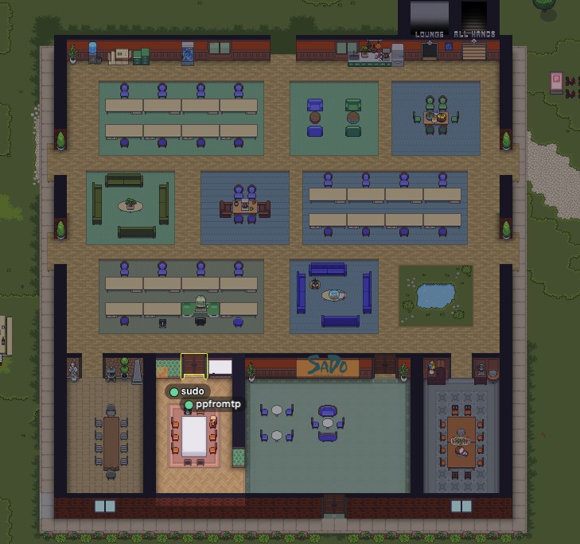

1. ITエンジニア学科
Gatherとは？
Gatherは、インターネットを使ったオンライン学習のためのツールです。 ビデオ通話やチャットを使って、先生やほかの生徒と一緒に勉強できます。 どこにいても、インターネットがあれば参加でき、 自分のペースで学ぶことができるのでとても便利です。

2. カリキュラム
2.1 基本情報技術者試験
IT分野の基礎を学んで、資格を取得するための勉強をします。プログラミングやネットワーク、データベースの基礎を学ぶことで、実際の仕事で使える技術を身につけます。試験では、問題を解く力を高めることができ、資格を取得することで、IT業界で活躍するための大きな第一歩を踏み出せます。
2.2 Web制作演習
Web制作の授業では、HTML、CSS、JavaScriptを使って、自分だけのWebサイトを作る方法を学びます。まずは、Webページのデザインを考え、レイアウトや色を決めます。次に、JavaScriptを使って、ボタンを押したときに何かが動くような面白い機能を作り、実際に使えるサイトを作ります。完成したWebサイトは、自分のスキルをアピールするポートフォリオとして活用できます。
2.3 プログラミング演習
プログラミングの授業では、PythonやJavaを使ってコーディングの練習をします。プログラミングの基礎から、少し難しいアルゴリズムを使った課題に取り組んで、実際に使えるプログラムを作ります。これらのスキルは、将来どんな仕事をしても大切な力になります。

3. 目指せる資格
-
国家資格 基本情報技術者試験
IT（情報技術）に関する基礎的な知識とスキルを評価するための試験です。この試験では、コンピュータやプログラミング、システムの作り方など、ITの基本を学びます。
-
国家資格 応用情報技術者試験
基本情報技術者試験の次のステップにあたる、もっと高度なITの知識とスキルを試す試験です。この試験では、ITの技術を実際の仕事でどう使うかを学びます。
4. 目指せる職業
-
システムエンジニア
システムエンジニアは、会社やお店のためにコンピュータのシステムを作る仕事をします。お客様が何を必要としているかを聞いて、それに合ったシステムを設計・開発・運用します。
-
プログラマ
プログラマは、コンピュータで動くソフトを作る仕事です。プログラミング言語を使って、アプリやシステムを動かすための「コード」を書きます。
-
モバイルアプリエンジニア
モバイルアプリエンジニアは、スマートフォンやタブレットで使うアプリを作る仕事です。iPhoneやAndroidのアプリを作り、使いやすいデザインや動きがスムーズに動くようにします。また、アプリがインターネットとつながる部分（バックエンド）も作成します。
-
Webアプリエンジニア
Webアプリエンジニアは、インターネットで使うアプリを作る仕事です。ウェブサイトのデザインを作る「フロントエンド」と、サーバーでデータを管理する「バックエンド」の両方を担当します。